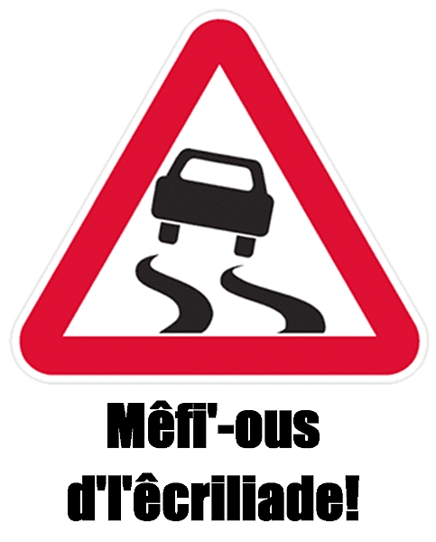

|
 |
|
Jèrriais |
Angliais |
|
l'avion |
plane |
|
un baté |
boat |
|
eune bike |
bicycle |
|
eune beusse |
bus |
|
lé taxi |
taxi |
|
lé moto |
car |
|
eune vaituthe |
car |
|
l'ouadgîn |
truck |
|
la motor-bike |
motorbike |
|
lé navithe |
ship |
|
lé vaissé |
vessel |
|
lé vailyi |
sailing ship |
|
la véhicl'ye |
vehicle |
|
un boulant |
vehicle |
|
lé tram |
tram |
|
lé train |
train |
|
lé tracteu |
tractor |
|
lé hélicoptéthe |
helicopter |
|
lé char à bancs |
charabanc |
|
lé cârrosse |
coach |
|
la tchéthette |
light cart |
|
lé tchéthibot |
small cart |
|
la tchéthiole |
buggy |
|
lé tchéthiot |
wagon |
|
lé hèrnais |
two-wheeled cart |
|
eune vainne |
van |
|
lé cruchot |
small boat |
|
lé stînme |
steamship |
|
lé catamaran |
catamaran |
|
la caravanne |
caravan |
|
eune att'leuse |
carriage |
|
un quèrre |
trap |
|
un baté à nagi |
rowing boat |
|
un péteux |
two-stroke |
|
un traîné |
sleigh |
|
la reue |
wheel |
|
lé rai d'eune reue |
spoke of a wheel |
|
lé moueu |
axle |
|
les manchelles |
handlebars |
|
lé bîssa |
saddlebags |
|
l's aubes |
propeller |
|
l'engîn |
motor |
|
lé chabot |
brake |
|
êtreindre lé chabot |
apply the brake |
|
un tyeur |
tyre |
|
la pédale |
pedal |
|
la reue d'avo |
steering wheel |
|
les veues |
lights |
|
eune selle |
saddle |
|
la pompe à pétrole |
petrol pump |
|
stèrter |
to start |
|
cachi |
to drive |
|
marchi |
to walk |
|
partchi |
to park |
|
stâtionner |
to park |

|
la route |
road |
|
la rue |
street |
|
lé c'mîn |
path |
|
la sente |
path |
|
la cache |
drive(way) |
|
lé trottouaithe |
pavement |
|
lé pavé |
pavement |
|
un carrefour |
crossroads |
|
eune trébule |
pothole |
|
lé c'mîn d'fé |
railway |
|
un tchu-d'sa |
cul de sac |
|
eune dormiéthe |
railway sleeper |
|
un titchet |
ticket |
|
donner un pâssage à tchitch'un |
to give someone a lift |
|
un viage |
journey |
|
lé trafi |
traffic |
|
un piêton |
pedestrian |
|
un cacheux |
driver |
|
un pâssagi |
passenger |
|
lé garage |
garage |
|
les veues d'trafi |
traffic light |
|
lé c'mîn à bike |
cycle path |
|
la stâtion d'beusse |
bus station |
|
l'aéroport |
airport |
|
la caûchie |
harbour |
|
la stâtion d'taxis |
taxi rank |
|
l'abri d'beusse |
bus shelter |
|
l'arrêt d'beusse |
bus stop |
 |
||
 |
 |
|
 |
 |
|
 |
 |
 |


 lé train
lé train
|  |  |
Viyiz étout: